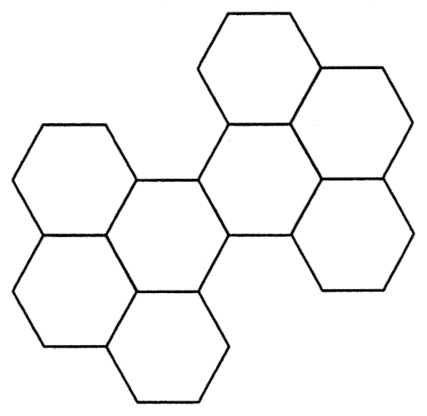

幾何 · 對稱

單個正六邊形有 $6$ 條對稱軸，但八個拼在一起之後，大部分方向都會被「多出來的部分」破壞，因此不能照搬 $6$。
把八個六邊形看成一個整體，沿着穿過圖形中心的直線逐個方向試：其中兩個方向對摺後，兩邊的六邊形可以一一對應重合；其餘方向（包括單個六邊形本身的邊方向）一試就會發現某一側多出半個六邊形，無法重合。
實測時可用一張透明紙描出外輪廓，再沿直線對摺，能完全重合的直線才計入。
圖形轉 $180^{\circ}$ 會與自己重合，但「旋轉重合」不等於「對摺重合」。$60^{\circ}$、$120^{\circ}$ 的旋轉會把整個圖形移位，那些方向也不是對稱軸。
能够把圖形分成兩個全等鏡像部分的直線只有 $2$ 條。
答案為 A。